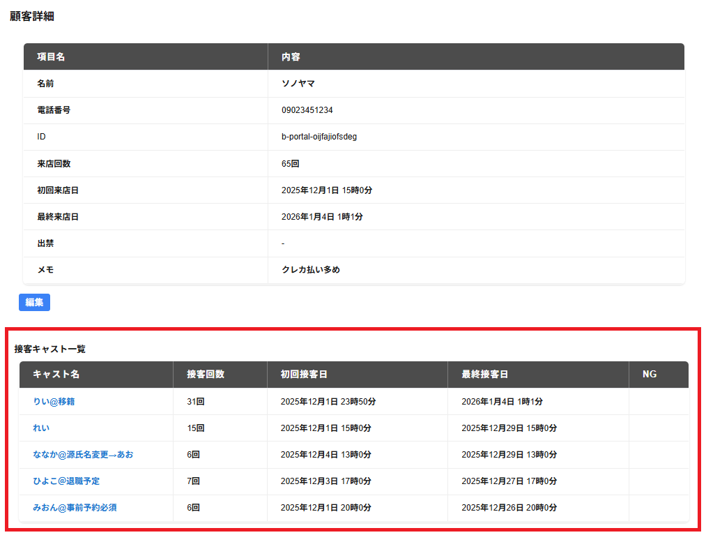

画面の下部に対象の顧客の接客キャスト一覧が表示されます。
以下の項目が一覧で表示されます。
・キャスト名
対象の顧客に接客した履歴のあるキャスト名が表示されます。
・接客回数
対象の顧客にキャストが接客した回数が表示されます。
・初回接客日
対象の顧客にキャストが接客した初回接客日の日時が表示されます。
・最終接客日
対象の顧客にキャストが接客した最終接客日の日時が表示されます。
・NG
対象の顧客に対するNGがある場合はNGと表示されます。
対象のキャストの列を選択すると、キャスト対応履歴が表示されます。
